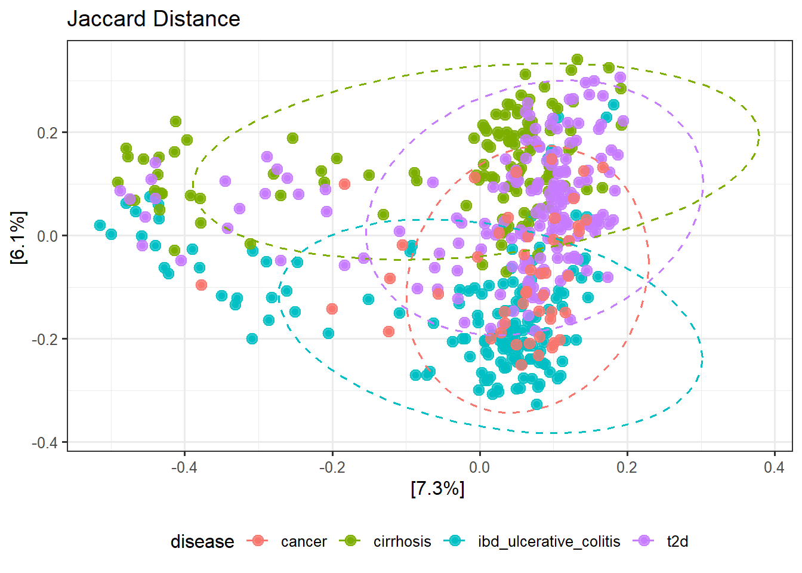

source("inputData.R")
Attachement du package : 'dplyr'Les objets suivants sont masqués depuis 'package:stats':
filter, lagLes objets suivants sont masqués depuis 'package:base':
intersect, setdiff, setequal, unionsource("inputData.R")
Attachement du package : 'dplyr'Les objets suivants sont masqués depuis 'package:stats':
filter, lagLes objets suivants sont masqués depuis 'package:base':
intersect, setdiff, setequal, unionBeta diversity quantifies the dissimilarity between pairs of samples. It answers how different are the microbial communities across groups. We examine whether gut microbiomes differ significantly between disease groups using common distance metrics:
Bray-Curtis - Considers both presence/absence and relative abundance. The sum of lesser counts for species present in both communities divided by the sum of all counts in both communities. This can be thought of as a quantitative version of the Sørensen index.
\[ BC = \frac{\sum_{i=1}^{n} |p^a_{i} - p^b_{i}|}{\sum_{i=1}^{n} (p^a_{i} + p^b_{i})} \]
\(n\) = total number of species
\(p^a_{i} and p^b_{i}\) = are the relative frequencies of species \(i\) in plots \(a\) and \(b\)
Jaccard - Considers only presence/absence. The number of species common to both communities divided by the number of species in either community.
\[ J=(B+C)/(A+B+C) \]
Sorensen - This Index focuses exclusively on shared presence and addresses “how similar are two communities?”. Two times the number of species common to both communities divided by the sum of the number of species in each community.
\[ S=(B+C)/(2A+B+C) \]
\(A\) = the number of species shared by two communities
\(B, C\) = are the number of species unique to each of the two communities
We then visualise sample similarities via Principal Coordinate Analysis (PCoA) and test for group differences using PERMANOVA. A key assumption of PERMANOVA is homogeneity of multivariate dispersions. We check this with a beta dispersion test.
We compute distance matrices from the normalised counts
library("tidyverse")── Attaching core tidyverse packages ──────────────────────── tidyverse 2.0.0 ──
✔ forcats 1.0.1 ✔ readr 2.2.0
✔ ggplot2 4.0.2 ✔ stringr 1.6.0
✔ lubridate 1.9.5 ✔ tidyr 1.3.2
✔ purrr 1.2.1
── Conflicts ────────────────────────────────────────── tidyverse_conflicts() ──
✖ dplyr::filter() masks stats::filter()
✖ dplyr::lag() masks stats::lag()
ℹ Use the conflicted package (<http://conflicted.r-lib.org/>) to force all conflicts to become errorslibrary("phyloseq")
library("vegan")Le chargement a nécessité le package : permute# Bray-Curtis (abundance‑sensitive)
dist_bray <- distance(metagenomics, method = "bray")
# Jaccard (presence/absence only)
dist_jaccard <- distance(metagenomics, method = "jaccard")
# Convert abundance matrix to presence/absence (0/1)
# pa_matrix <- ifelse(otu_table(metagenomics) > 0, 1, 0)
# Bray–Curtis on binary data gives Sørensen
# dist_sorensen <- vegdist(pa_matrix, method = "bray")PCoA (also called metric MDS) projects the high‑dimensional distance matrix into two dimensions, allowing us to visualize how samples cluster by disease status.
# Perform PCoA on distance matrices
ord_bray <- ordinate(metagenomics, method = "MDS", distance = dist_bray)
p_bray <- plot_ordination(metagenomics, ord_bray, color = "disease") +
geom_point(size = 3, alpha = 0.8) +
stat_ellipse(aes(group = disease), linetype = 2, level = 0.95) +
theme_bw(base_size = 12) +
ggtitle("Bray-Curtis Dissimilarity") +
theme(legend.position = "bottom")Warning: `aes_string()` was deprecated in ggplot2 3.0.0.
ℹ Please use tidy evaluation idioms with `aes()`.
ℹ See also `vignette("ggplot2-in-packages")` for more information.
ℹ The deprecated feature was likely used in the phyloseq package.
Please report the issue at <https://github.com/joey711/phyloseq/issues>.p_bray
# ggsave("figures/Beta/PCA_distance_bray.pdf", p_bray)
ord_jaccard <- ordinate(metagenomics, method = "MDS", distance = dist_jaccard)
p_jaccard <- plot_ordination(metagenomics, ord_jaccard, color = "disease") +
geom_point(size = 3, alpha = 0.8) +
stat_ellipse(aes(group = disease), linetype = 2, level = 0.95) +
theme_bw(base_size = 12) +
ggtitle("Jaccard Distance") +
theme(legend.position = "bottom")
p_jaccard
# ggsave("figures/Beta/PCA_distance_jaccard.pdf", p_jaccard)
# ord_sorensen <- ordinate(metagenomics, method = "MDS", distance = dist_sorensen)
# p_sorensen <- plot_ordination(metagenomics, ord_sorensen, color = "disease") +
# geom_point(size = 3, alpha = 0.8) +
# stat_ellipse(aes(group = disease), linetype = 2, level = 0.95) +
# theme_bw(base_size = 12) +
# ggtitle("Sorensen Distance") +
# theme(legend.position = "bottom")
# p_jaccardSamples clustering closely together have more similar microbial compositions. Separation between disease groups suggests differences in microbial community structure associated with disease status.
Jaccard ordination visualizes differences in taxon membership independent of abundance. Group separation indicates disease-associated changes in which taxa are present rather than their relative abundance.
PERMANOVA is sensitive to differences in within‑group dispersion (variance). We test this using betadisper() (multivariate analogue of Levene’s test).
We performed betadisper() on both Bray‑Curtis and Jaccard distance matrices, followed by a permutation test. The test evaluates whether the within‑group dispersion (variance around the group median) differs significantly among the four disease groups.
library("vegan")
disp_bray <- betadisper(dist_bray, samples_df$disease)
# pdf("figures/Beta/boxplot_betaDisperson_bray.pdf")
boxplot(disp_bray)
dev.off()null device
1 disp_jaccard <- betadisper(dist_jaccard, samples_df$disease)
# pdf("figures/Beta/boxplot_betaDisperson_jaccard.pdf")
boxplot(disp_jaccard)
dev.off()null device
1 # Permutation test for homogeneity
disp_test_bray <- permutest(disp_bray, permutations = 999)
disp_test_bray
Permutation test for homogeneity of multivariate dispersions
Permutation: free
Number of permutations: 999
Response: Distances
Df Sum Sq Mean Sq F N.Perm Pr(>F)
Groups 3 0.29385 0.097948 18.158 999 0.001 ***
Residuals 480 2.58921 0.005394
---
Signif. codes: 0 '***' 0.001 '**' 0.01 '*' 0.05 '.' 0.1 ' ' 1disp_test_jaccard <- permutest(disp_jaccard, permutations = 999)
disp_test_jaccard
Permutation test for homogeneity of multivariate dispersions
Permutation: free
Number of permutations: 999
Response: Distances
Df Sum Sq Mean Sq F N.Perm Pr(>F)
Groups 3 0.12773 0.042578 18.513 999 0.001 ***
Residuals 480 1.10393 0.002300
---
Signif. codes: 0 '***' 0.001 '**' 0.01 '*' 0.05 '.' 0.1 ' ' 1Both tests are highly significant (p < 0.001), meaning: Only 1 out of 1000 permutations produced an F‑statistic as extreme as the one observed.
This is very strong evidence that the groups do NOT have equal multivariate dispersions. The assumption of homogeneity of variances is violated for both distance metrics.
PERMANOVA
PERMANOVA (adonis2) is used to test whether the centroids of the groups (disease status) are significantly different in the multivariate space defined by the distance metrics.
# Bray-Curtis
permanova_bray <- adonis2(dist_bray ~ disease,
data = samples_df,
permutations = 999)
print(permanova_bray)Permutation test for adonis under reduced model
Permutation: free
Number of permutations: 999
adonis2(formula = dist_bray ~ disease, data = samples_df, permutations = 999)
Df SumOfSqs R2 F Pr(>F)
Model 3 13.545 0.08694 15.235 0.001 ***
Residual 480 142.253 0.91306
Total 483 155.798 1.00000
---
Signif. codes: 0 '***' 0.001 '**' 0.01 '*' 0.05 '.' 0.1 ' ' 1# Jaccard
permanova_jaccard <- adonis2(dist_jaccard ~ disease,
data = samples_df,
permutations = 999)
print(permanova_jaccard)Permutation test for adonis under reduced model
Permutation: free
Number of permutations: 999
adonis2(formula = dist_jaccard ~ disease, data = samples_df, permutations = 999)
Df SumOfSqs R2 F Pr(>F)
Model 3 10.497 0.05553 9.4077 0.001 ***
Residual 480 178.528 0.94447
Total 483 189.025 1.00000
---
Signif. codes: 0 '***' 0.001 '**' 0.01 '*' 0.05 '.' 0.1 ' ' 1Bray Curtis
Model (disease) explains 6.4% of the total variation in community composition (abundance‑sensitive).
Residual (unexplained) = 93.6%.
F = 10.97 – large relative to null permutations.
p = 0.001 – significant at α = 0.001.
Jaccard
Disease explains 4.0% of variation (presence/absence only).
Residuals = 96%
F = 6.65 – also large.
p = 0.001 – significant.
Both metrics show a statistically significant association between disease status and microbial community dissimilarity. The effect sizes (R²) are small. Bray‑Curtis explains more variation than Jaccard (6.4% vs 4.0%), suggesting that abundance differences are more discriminative than just presence/absence.
Both PERMANOVA and beta dispersion tests were significant (p = 0.001 for both Bray‑Curtis and Jaccard). This indicates that disease status is associated with differences in both the average microbial community composition and the within‑group variability.
# Create a summary table
library(knitr)
results_df <- data.frame(
Metric = c("Bray-Curtis", "Jaccard"),
R2 = c(round(permanova_bray$R2[1], 3), round(permanova_jaccard$R2[1], 3)),
F = c(round(permanova_bray$F[1], 2), round(permanova_jaccard$F[1], 2)),
`p-value` = c(format(permanova_bray$`Pr(>F)`[1], digits = 4),
format(permanova_jaccard$`Pr(>F)`[1], digits = 4)),
`Dispersion p-value` = c(format(disp_test_bray$tab$`Pr(>F)`[1], digits = 4),
format(disp_test_jaccard$tab$`Pr(>F)`[1], digits = 4))
)
kable(results_df, caption = "PERMANOVA and beta dispersion test results")| Metric | R2 | F | p.value | Dispersion.p.value |
|---|---|---|---|---|
| Bray-Curtis | 0.087 | 15.23 | 0.001 | 0.001 |
| Jaccard | 0.056 | 9.41 | 0.001 | 0.001 |
The table summarizes:
effect size (R²)
PERMANOVA significance
homogeneity of dispersion testing
Higher R² values indicate stronger disease-associated microbial differences.
Pairwise comparisons identify which disease groups differ in within-group variability.
lower dispersion → more homogeneous microbiome composition
higher dispersion → greater interpersonal variability
TukeyHSD(disp_bray) # shows which disease pairs have different spreads Tukey multiple comparisons of means
95% family-wise confidence level
Fit: aov(formula = distances ~ group, data = df)
$group
diff lwr upr
cirrhosis-cancer 0.016682210 -0.015732867 0.049097288
ibd_ulcerative_colitis-cancer -0.032517958 -0.063968723 -0.001067194
t2d-cancer 0.025310339 -0.005638034 0.056258711
ibd_ulcerative_colitis-cirrhosis -0.049200169 -0.072568279 -0.025832058
t2d-cirrhosis 0.008628128 -0.014059308 0.031315564
t2d-ibd_ulcerative_colitis 0.057828297 0.036541374 0.079115220
p adj
cirrhosis-cancer 0.5462791
ibd_ulcerative_colitis-cancer 0.0395764
t2d-cancer 0.1518545
ibd_ulcerative_colitis-cirrhosis 0.0000005
t2d-cirrhosis 0.7606789
t2d-ibd_ulcerative_colitis 0.0000000IBD has significantly lower dispersion than cirrhosis (IBD is more homogeneous).
T2D has significantly higher dispersion than IBD (T2D is more heterogeneous).
No evidence that cancer differs from others, nor cirrhosis vs T2D.
TukeyHSD(disp_jaccard) # shows which disease pairs have different spreads Tukey multiple comparisons of means
95% family-wise confidence level
Fit: aov(formula = distances ~ group, data = df)
$group
diff lwr upr
cirrhosis-cancer 0.010222026 -0.010943737 0.0313877892
ibd_ulcerative_colitis-cancer -0.021306792 -0.041842897 -0.0007706877
t2d-cancer 0.017179482 -0.003028580 0.0373875449
ibd_ulcerative_colitis-cirrhosis -0.031528818 -0.046787270 -0.0162703667
t2d-cirrhosis 0.006957456 -0.007856542 0.0217714546
t2d-ibd_ulcerative_colitis 0.038486275 0.024586756 0.0523857932
p adj
cirrhosis-cancer 0.5984418
ibd_ulcerative_colitis-cancer 0.0385892
t2d-cancer 0.1269799
ibd_ulcerative_colitis-cirrhosis 0.0000009
t2d-cirrhosis 0.6202797
t2d-ibd_ulcerative_colitis 0.0000000IBD less variable than cirrhosis.
T2D more variable than IBD.
Cancer not different from any
Cirrhosis vs T2D not different.
Beta diversity was assessed using Bray–Curtis and Jaccard distance metrics. Principal Coordinate Analysis (PCoA) was used to visualize microbial community differences between disease groups. Group differences were evaluated using PERMANOVA (adonis2, 999 permutations). Homogeneity of multivariate dispersion was assessed using betadisper() followed by permutation testing. Pairwise dispersion differences were evaluated using Tukey’s HSD test.
Beta diversity analysis revealed significant differences in microbial community composition between disease groups.
Bray–Curtis explained more variation than Jaccard, suggesting that abundance shifts contributed more strongly than simple taxon presence/absence.
Significant PERMANOVA results indicate disease-associated differences in microbiome composition.
Significant beta dispersion tests indicate unequal within-group variability, suggesting that disease groups differ not only in average composition but also in microbiome heterogeneity.
Because PERMANOVA is sensitive to dispersion differences, results should be interpreted as reflecting both centroid separation and changes in community variability.